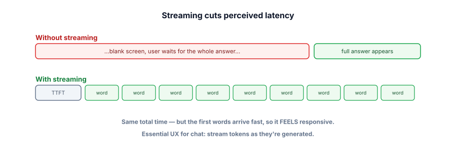

Streaming
The cheapest, highest-impact latency improvement doesn’t make the model faster at all — it just shows the user the words as they’re generated. Streaming is the difference between a chat that feels instant and one that feels broken, and it’s a few lines of code.
Perceived latency is what users feel
Recall that the model generates one token at a time (decode). Without streaming, you wait for the entire answer, then show it all at once — so a 5-second response is 5 seconds of blank screen. With streaming, you display each token the moment it’s produced, so the first words appear almost immediately and the rest flow in. The total time is identical, but the perceived latency — how slow it feels — drops dramatically, because the user sees progress instead of a frozen screen.

Streaming sends the model’s output token by token as it’s generated, rather than waiting for the whole response. Time to first token (TTFT) is how long until the first word appears — the number users actually feel. Perceived latency is the felt slowness, which streaming reduces even though total generation time is unchanged. Technically it’s delivered over a streaming transport (server-sent events or websockets).
Feel the difference
Stream vs. wait
Both produce the same answer in the same total time. One feels far better.
Streaming is usually a single flag. Iterate over chunks and print as they arrive.
import ollama
stream = ollama.chat(
model="llama3.2",
messages=[{"role": "user", "content": "Explain streaming in two sentences."}],
stream=True, # the whole trick
)
for chunk in stream:
print(chunk["message"]["content"], end="", flush=True) # show each token as it arrives
# In a web app, push each chunk to the browser via Server-Sent Events (SSE) or a websocket.Almost every model API and runtime supports a streaming mode like this. For any chat-style UI, it should be your default.
Streaming shines for human-read text. It’s pointless (or harmful) when the consumer is code: if you’re parsing a JSON response or a tool call, you need the whole thing before you can use it, so streaming just adds complexity. Stream for chat and long-form answers; collect-then-parse for structured output and machine consumption.
- Streaming shows tokens as they’re generated — same total time, far lower perceived latency.
- TTFT (time to first token) is the number users actually feel; streaming makes it the whole experience.
- It’s usually a single flag (
stream=True) plus pushing chunks to the client (SSE/websockets). - It doesn’t reduce cost or total time — it improves the felt experience.
- Default to streaming for chat; don’t stream when you need to parse the whole output (JSON, tool calls).
Your boss says “the model is too slow — make it generate faster” after seeing a 4-second wait in the chat UI. The model speed is fixed (it’s an API). What do you do?
Streaming doesn't change total time, so why does it feel faster?
1. Explain why streaming reduces perceived latency but not total time or cost.
2. You’re building an endpoint that returns a JSON object your frontend parses. Should you stream the model’s output to your server logic? Why?
3. Besides streaming, name two ways to reduce the time before the user sees the first useful token.
▸ Show solutions & reasoning
1. The model still generates the same number of tokens in the same time and you still pay for them — streaming only changes when you display them. Instead of buffering the whole answer and showing it at the end, you reveal each token immediately, so the user perceives a fast start and continuous progress. Felt speed improves; the underlying work and bill don’t.
2. No — your server needs the complete JSON to parse it, so streaming buys nothing and adds complexity (you’d just reassemble the chunks before parsing anyway). Streaming is for human-read text; for machine-consumed structured output, collect the full response, then validate and parse it (Track 2.4). (You might still stream to the browser if a human reads part of it, but not to parsing logic.)
3. (a) Shorten the prompt — prefill is faster, so TTFT drops (a long prompt delays the first token). (b) Use a faster/smaller model (or route easy queries to one). Both attack TTFT directly; streaming then makes that fast first token the whole felt experience. (Bonus: caching can make some responses instant.)
Streaming is one instance of a broader UX principle: perceived performance often matters more than raw speed, and you can engineer it. Beyond token streaming, mature LLM apps reduce felt latency with progressive disclosure — show a “thinking…” state, then stream the answer; surface intermediate steps of an agent as they happen (the trace from Track 4) so the user sees work being done; and render partial structure (e.g., start showing a list as items stream).
The goal is to never leave the user staring at a frozen screen wondering if it broke. A 6-second response that streams from the first second feels responsive; a 2-second response that shows nothing until the end can feel slow and even appear hung.
There’s an engineering caveat to plan for: once you stream, you’ve started showing output before you’ve seen all of it — which complicates anything that needs the whole response. Output moderation (Track 7) and validation typically need the complete text, so a common pattern is to stream to the UI optimistically but be ready to retract/replace if a post-generation safety check fails, or to moderate in a way that can interrupt the stream.
For structured output you simply don’t stream to the parser. So the rule of thumb: stream human-facing prose by default for the big UX win, but keep machine-consumed and safety-gated paths on a collect-then-process model. Used this way, streaming is the rare optimization that’s nearly free, dramatically improves the experience, and ships in an afternoon.
Streaming makes responses feel instant. The next technique can make some responses actually instant — and free. Next: caching.